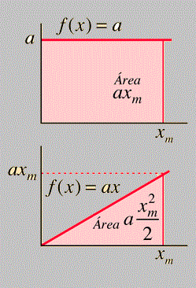
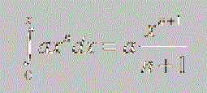

|
|
Aquí la conclusión general es que la integral de una constante es exactamente la constante multiplicada por la variable de integración x. En una función f(x) = ax, el área es un triángulo La progresión nos lleva a la forma general de la integral como un polinomio de x:  |